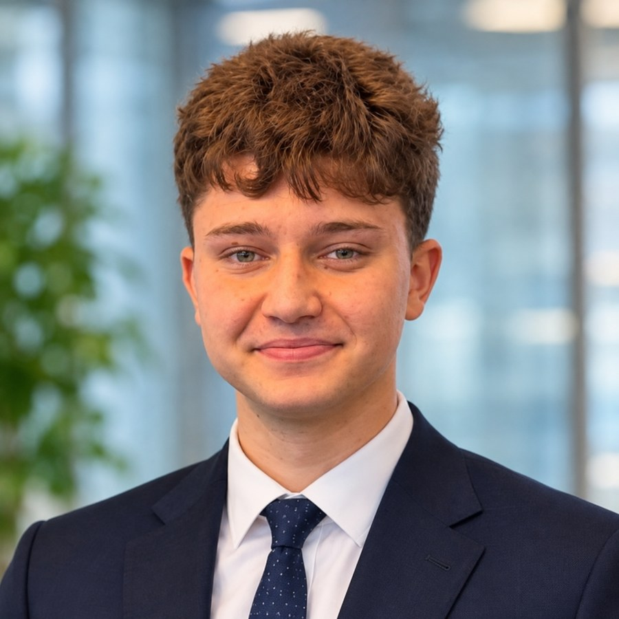
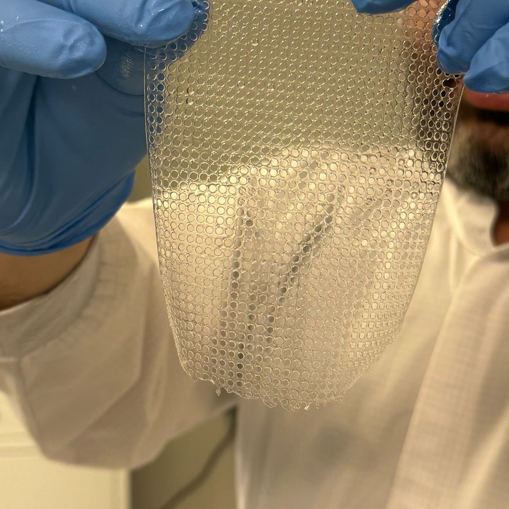
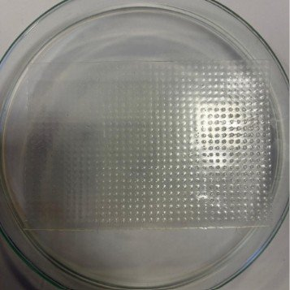
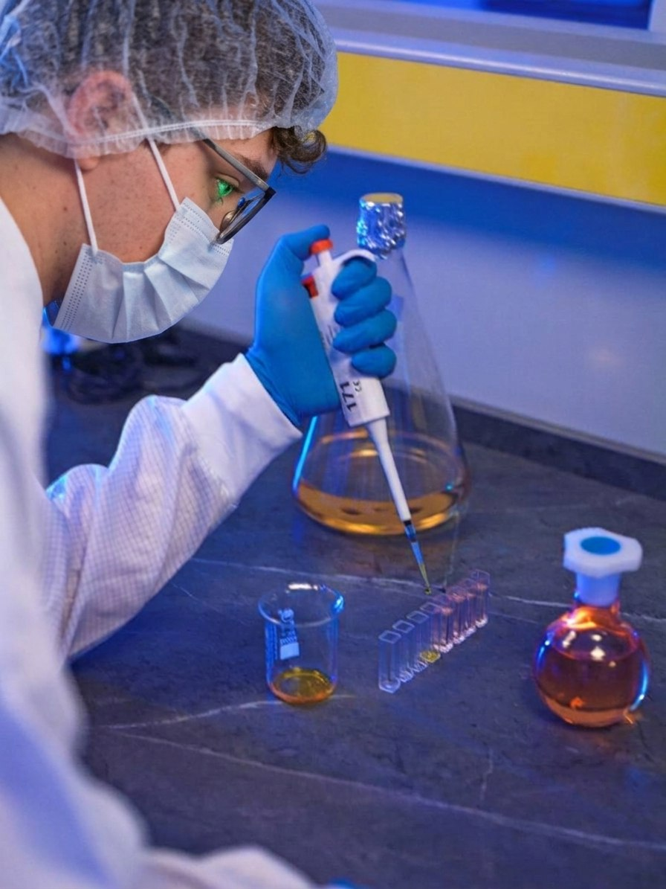
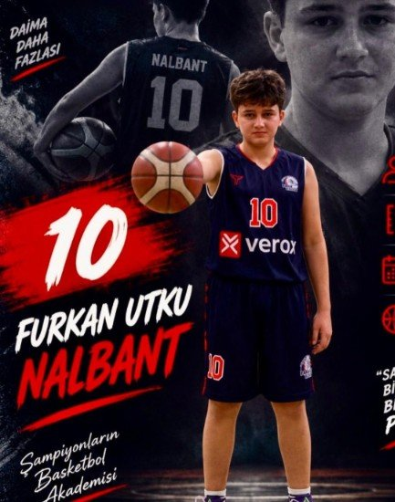
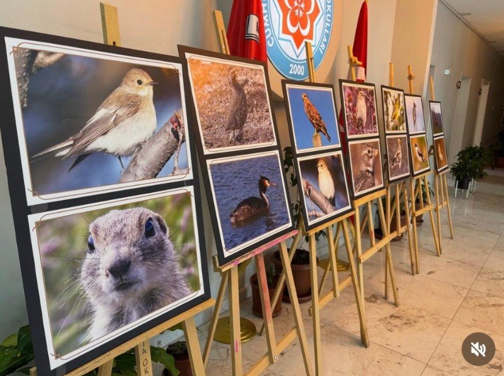
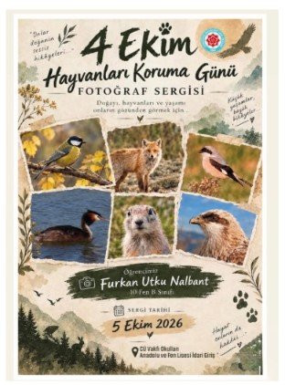
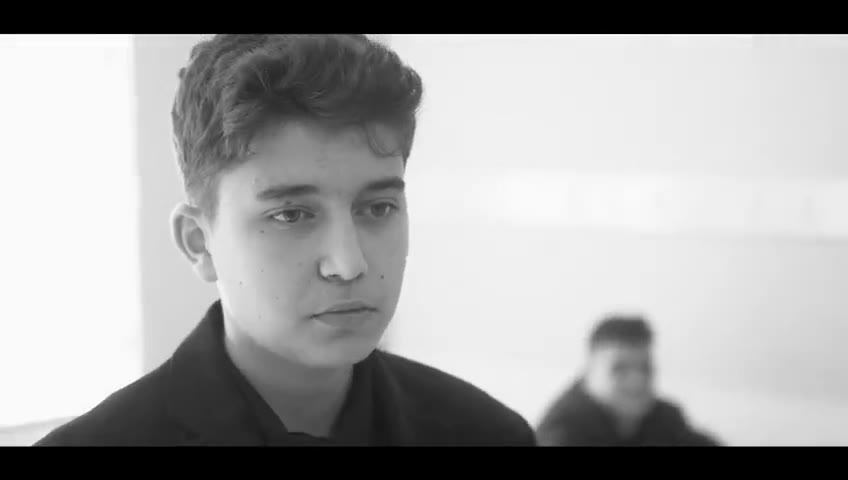

Furkan Utku Nalbant
High school student · TÜBİTAK 2204-A researcher in polymer biomaterials · Interested in Materials Science, Biomedical, Mechanical and Industrial Engineering
Sivas, Türkiye · Contact info
About
I am a science-focused student at Sivas Cumhuriyet University Foundation Science High School, where I hold a merit-based scholarship and an athlete scholarship. Mathematics and the natural sciences are the subjects I enjoy most.
My main interest is polymer-based biomedical materials. In a TÜBİTAK 2204-A research project I made porous hernia-mesh prototypes by UV polymerisation, coated them with an antimicrobial agent and tested them with microbiological culture methods. I want to study Materials Science, Biomedical Engineering or Polymer Engineering and build sustainable technologies that help people and the environment.
I am also drawn to mechanical and industrial engineering. I design parts myself: I measure real objects with a micrometre caliper, model them as STL files and produce them on a 3D printer, so I follow an idea from drawing to finished part.
Basketball has taught me discipline and teamwork. Wildlife photography has taught me patience and careful observation. Both shape how I do research.
Research
Production of Hernia Meshes: Polyurethane Acrylate by UV Polymerisation and Antimicrobial Coating with Benzalkonium Chloride. The project develops porous hernia-mesh prototypes from biocompatible polyurethane acrylate (PUA), using UV curing and templating to control pore size and distribution so the mesh can support tissue integration.
- Produced porous PUA mesh prototypes by UV polymerisation
- Applied a benzalkonium chloride antimicrobial coating by dip coating, aiming for a uniform, stable layer
- Evaluated antimicrobial performance by culturing meshes on Tryptic Soy Agar (TSA) and Sabouraud Dextrose Agar (SDA)
- Results: no microbial growth was observed on the coated meshes cultured on TSA and SDA
- Pore size: about 250 µm, set by the templating method
- Fabrication: the UV-curing and templating process was straightforward and easy to reproduce
- Stage reached: project completed and submitted to the TÜBİTAK 2204-A programme in 2026; I took part as a team member


Hands-on group work in a school laboratory, focused on UV curing and materials testing.

Education
- GPA: above 96/100
- Merit-based school scholarship
- Athlete scholarship
- Focus: mathematics and natural sciences
Activities
- Championships and medals in the U11, U12, U14 and U16 categories: three first-place and two second-place finishes

- Photographs exhibited at the Animal Protection Day photography exhibition, 5 October 2026
- Photography portfolio on Instagram



I measure objects with a micrometre caliper, turn the data into drawings, build STL files in beginner 3D software and print them. Designing and producing parts is what draws me to mechanical and industrial engineering.

Member of school theatre groups and drama projects.
